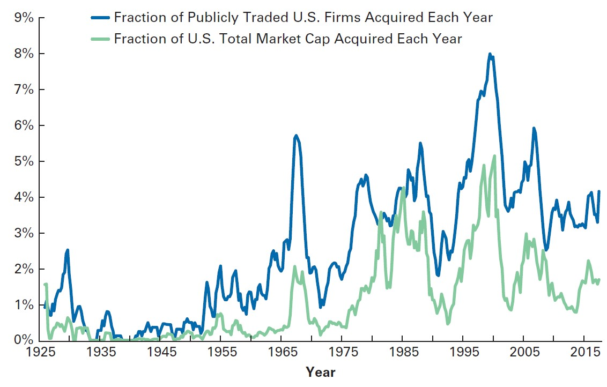
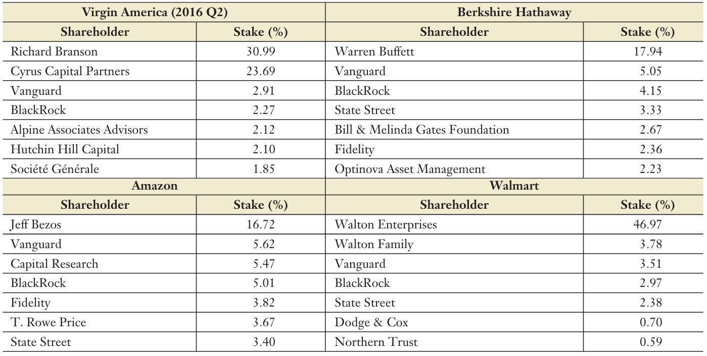
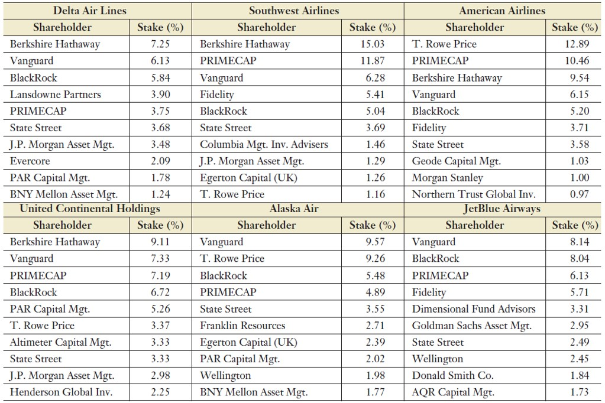

Mergers and Acquisitions
Mergers and Acquisitions
July, 2008: Anheuser-Busch agreed to an acquisition by Belgian-based beer giant InBev for $70 per share in cash
In fact, Anheuser-Busch’s board flatly rejected an initial $65 per share offer, preferring to remain independent
What happens next?
InBev’s managers faced the daunting task of integrating Anheuser’s organization and brands into their global company and generating enough value from the transaction to justify the price they paid
Apart from the deal itself, new financing and investment decisions are brought into action
This lecture discusses Mergers and Acquisitions, often referred to as M&A, and its importance to Financial Managers
Historical Context: Merger Waves
The takeover market is characterized by merger waves: peaks of heavy activity followed by quiet troughs of few transactions. Some stylized facts on M&A activity from an historical perspective:
For example, M&A activity is greater during economic expansions than during contractions and correlates with bull markets:
- The same economic activities that drive expansions most likely also drive peaks in merger activity
- For example, lower interest rates, existence of investment opportunities may affect economic activity and, at the same time, foster M&A activity
To that matter, we can look at the time-series of economic booms and bursts and analyze which characteristics took place in each M&A “wave”
Historical Context: Merger Waves (continued)

Historical Context: Merger Waves (continued)
The periods of the greatest takeover activity occurred in the 1960s, 1980s, 1990s, and 2000s. Each merger wave was characterized by a typical type of deal:
1960: “conglomerate wave” \(\rightarrow\) firms typically acquired firms in unrelated businesses. The rationale was that managerial expertise was portable across business lines and that the conglomerate business form offered great financial advantages
1980: “hostile, bust-up” takeovers \(\rightarrow\) acquirers purchased poorly performing conglomerates and sold off its individual business units for more than the purchase price
1990: “strategic” or “global” deals \(\rightarrow\) more likely to be friendly and to involve companies in related businesses; these mergers often were designed to create strong firms on a scale that would allow them to compete globally
2000: consolidation \(\rightarrow\) in many industries such as telecommunications and software. This wave also saw private equity firms, such as KKR, TPG, BlackRock, and Cerberus playing a bigger role in acquiring larger firms, such as Hertz. This wave eventually ended with the 2008 economic contraction
Types of Mergers
- From an historical perspective, M&A activity was quite different across each wave. What actually characterizes mergers?
- While we tend to talk about merger waves and mergers in general, the term “merger,” as commonly used, encompasses several types of transactions that vary by the relation between the target and the acquirer and the method of payment used in the transaction, which are generally included in a document called term-sheet
Relationship between target and acquirer:
- If the target and acquirer are in the same industry, the merger is typically called a horizontal merger
- If the target’s industry buys or sells to the acquirer’s industry, it is called a vertical merger
- Finally, if the target and acquirer operate in unrelated industries, the deal is a conglomerate merger
Types of Mergers (continued)
Method of payment:
Deals also vary based on whether the target shareholders receive stock or cash as payment for target shares:
- When they receive stock, the deal is often called a stock swap, because target shareholders are swapping their old stock for new stock in either the acquirer or the newly created merged firm
- The consideration paid to target shareholders can be very complex, including debt instruments, options, and mixes of any of these with cash and/or stock. Commonly, however, target shareholders receive stock, cash, or a mix of the two
Market Reaction to Takeovers
Abstracting from the fundamental question of takeovers, what happens after the deal has been announced (or, alternatively, put in place)?
A bidder is unlikely to acquire a target company for less than its current market value. Instead, most acquirers pay a substantial acquisition premium, which is the percentage difference between the acquisition price and the pre-merger price of the target firm.
Based on historical data from U.S. markets over 1985-2005:
- The acquisition premium over the pre-merger price was around +43%
- The market reaction to the acquisition announcement on the target stocks was +15%
- The market reaction to the acquisition announcement on the acquired stocks was +1%
Market Reaction to Takeovers (continued)
Although acquirer shareholders see an average gain of 1%, in half of the transactions, the bidder price decreases. This raises up some questions:
- Why do acquirers pay a premium over the market value for a target company?
- Although the price of the target company rises on average upon the announcement of the takeover, why does it rise less than the premium offered by the acquirer?
- If the transaction is a good idea, why does the acquirer not consistently experience a large price increase?
In what follows, we’ll discuss each of these questions in detail
Reasons to acquire a company
- Let’s focus on Question 1: why do acquirers pay a premium over the market value for a target company?
- For most investors, an investment in the stock market is a zero-NPV investment.
- How, then, can an acquirer pay a premium for a target and still satisfy the requirement that the investment is a positive-NPV investment opportunity?
Answer: an acquirer might be able to add economic value, as a result of the acquisition, that an individual investor cannot add! In general, these come from synergies, such as cost reductions, revenue enhancements strategies!
Synergy Reasons to Merge
- Economies of Scale and Scope
- Vertical Integration
- Expertise and Learning Curve
- Monopoly Gains
- Efficiency Gains
- Tax Savings from Operating Losses
- Diversification
- Earnings Growth
Managerial Reasons to Merge
Most of the reasons given so far are economically motivated, shareholder-driven incentives to merge. However, managers sometimes have their own reasons to merge. These may be exacerbated in the absence of corporate governance mechanisms
Recall from our previous discussion that that the announcement gains for acquirers were negative in 50% of the time. Some explanations might include:
Conflicts of Interest
Limited downside, infinite upside: a CEO that owns 1% of her firm’s stock bears 1% of every dollar lost on a bad acquisition, but enjoys 100% of the gains in compensation and prestige that come with being the CEO of a larger company and may have additional compensation
Managers or controlling shareholders may also exploit their informational advantage by choosing to acquire their own firm when it is undervalued by the market
Managerial Reasons to Merge (continued)
Most of the reasons given so far are economically motivated, shareholder-driven incentives to merge. However, managers sometimes have their own reasons to merge. These may be exacerbated in the absence of corporate governance mechanisms
Recall from our previous discussion that that the announcement gains for acquirers were negative in 50% of the time. Some explanations might include:
Overconfidence
Managerial hubris: which maintains that overconfident CEOs pursue mergers that have low chance of creating value because they truly believe that their ability to manage is great enough to succeed
Overconfident managers believe they are doing the right thing for their shareholders, but irrationally overestimate their own abilities
Valuing an acquisition
- Conceptually, we can separate the price paid for a target into its pre-bid market value plus a premium:
\[ \small \text{Acquisition Price} = \text{Target's pre-bid capitalization} + \text{Acquisition Premium} \]
- From the acquirer’s perspective, the benefits of the acquisition can be calculated as:
\[ \small \text{Value Acquired} = \text{Target Stand-Alone Value} + \text{PV(Synergies)} \] \(\rightarrow\) Combining both, we can see that the takeover is a positive-NPV project only if:
\[ \small \text{PV(Synergies)} > \text{Acquisition Premium} \rightarrow NPV>0 \]
Valuing the acquisition (continued)
Although the premium that is offered is a concrete number, the synergies are not:
- Investors might well be skeptical of the acquirer’s estimate of their magnitude
- The market reaction, from the acquirer’s perspective, will depend on the investor’s expectations on the present value of synergies created
The acquirer’s market reaction was, on average, +1%, with a median of 0%. Thus, the market, on average, believes that the premium is approximately equal to the synergies! This helps answering Question 3
Note, however, that there is a large cross-section variation across deals:
- Positive reactions to bids are concentrated in smaller bidders
- During the 1990s, 87 large public acquirers announced bids that resulted in $1 billion or more in value reduction at announcement. This can be related to value-destroying operations driven by managerial incentives, and not synergies-related
Making the offer
A tender offer is a public announcement of its intention to purchase a large block of shares for a specified price
Bidders can pay the tender offer value using cash, stock, or a combination of both:
- In a cash transaction, the bidder simply pays for the target, including any premium, in cash
- In a stock transaction, the bidder pays for the target by issuing new stock and giving it to the target shareholders
The determination of actual the price that will be offered to the shareholders of the target firm is determined by the Exchange Ratio:
\[ \small \text{Exchange Ratio} = (\text{# of acquirer shares received for each target share}) \times \text{Acquirer Stock Price} \]
- In what follows, we’ll determine how the Exchange Ratio can be estimated
Exchange Ratio in stock swap mergers
Let \(A\) be the premerger, or stand-alone, value of the acquirer, and \(T\) be the premerger (stand-alone) value of the target. Let \(S\) be the value of the synergies created by the merger.
If the acquirer has \(N_A\) shares before the merger, at a share price \(P_A\), and issues additional \(x\) shares to pay for the target, the acquirer’s share price would increase if:
\[ \small \dfrac{A+T+S}{N_A+x}>\dfrac{A}{N_A}\equiv P_A \]
- Therefore, an acquirer would earn a positive NPV in the transaction if the value of the shares offered is less than the value of the target plus the synergies:
\[ \small x P_A < T + S \]
Exchange Ratio in stock swap mergers (continued)
- From the previous equation:
\[ \small x P_A < T + S \]
- If we define the target firm pre-announcement value as \(T = P_T \times N_T\), we can then rearrange the last equation to find the maximum exchange ratio that an acquirer can use to have positive NPV in the transaction:
\[ \small \text{Exchange Ratio}=\dfrac{x}{N_T}<\underbrace{\dfrac{P_T}{P_A}}_{\text{Difference in Price}}\times\underbrace{\bigg(1+\dfrac{S}{T}\bigg)}_{\text{Synergy %}} \]
- For example, if the value of synergies equals 20% of the value of the target, you would be willing to pay an exchange ratio 20% higher than the current price ratio
Exercise Example #1
Taggart Transcontinental and Phoenix-Durango have entered into a stock swap merger agreement whereby Taggart will pay a 30% premium over Phoenix-Durango’s premerger price. If Taggart’s premerger price per share was $15 and Phoenix-Durango’s was $30. Determine the exchange ratio that Taggart will offer.
\(\rightarrow\) Solution: define the ratio as:
\[ \text{Exchange Ratio}=\dfrac{\text{Target Price}\times \text{(1+Premium)}}{\text{Acquirer Price}}=\dfrac{30\times(1+30\%)}{15}=2.6 \]
- In words, this means that for using a stock swap merger agreement, Taggart needs to offer 2.6 shares for each share in Durango
Exercise Example #2
At the time Sprint announced plans to acquire Nextel in December 2004, Sprint stock was trading for $25 per share and Nextel stock was trading for $30 per share. If the projected synergies were $12 billion, and Nextel had 1.033 billion shares outstanding, what is the maximum exchange ratio Sprint could offer in a stock swap and still generate a positive NPV? What is the maximum cash offer Sprint could make?
\[ \small \text{Exchange Ratio}<\dfrac{30}{25}\bigg(1+\dfrac{12}{31}\bigg)= 1.665 \]
That is, Sprint could offer up to 1.665 shares of Sprint stock for each share of Nextel stock and generate a positive NPV. That would yield target shareholders \(1.665 \times 25 = 41.62\)
Alternatively, one could pay the target price plus the synergies per share:
\[ \small 30+\dfrac{12}{1,033}=30+11.62=41.62 \]
Board and Shareholder Approval
For a merger to proceed, both the target and the acquiring board of directors must approve the deal and put the question to a vote of the shareholders of the target (and, in some cases, the shareholders of the acquiring firm as well)
In a friendly takeover, there is no dispute: the target board of directors supports the deal and agrees on a price for the stock
In a hostile takeover, there is dispute: the target board of directors fights the takeover attempt. In this situation, the acquirer firm needs to garner enough shares (>50%) to take control and replace the board of directors
Question: if the shareholders of a target company receive a premium over the current market value of their shares, why would a board of directors ever oppose a takeover?
Answer: both rational (e.g., offer price may be too low, swap exchange is not advantageous in current prices) and irrational (e.g. managers self-interests) may play a role in here.
More on Hostile Takeovers
Mergers and Acquisitions can also be thought of a market for corporate control helps discipline managers from publicly traded firms to keep pushing for adding value to the shareholders:
When managers poorly perform on a consistent basis \(\rightarrow\) investors adjust expectations down \(\rightarrow\) stock prices go down
When managers consistently outperform \(\rightarrow\) investors adjust expectations up \(\rightarrow\) stock prices increase
It is interesting to think about what happens in situation 1:
- If stock prices go down, the enterprise value of the firm decreases
- The lump-sum value required for acquiring the firm is now cheaper
- The firm is now more prone to being a target in a takeover!
Incumbent managers are put into the spotlight, as a new shareholder can vote to replace them. Because of such credible threat of termination, managers have ex-ante incentives to maximize shareholder value!
Approval and Takeover Defenses
For a hostile takeover to succeed, the acquirer must go around the target board and appeal directly to the target shareholders - something called tender offer
The acquirer will usually couple this with a proxy fight: the acquirer attempts to convince target shareholders to unseat the target board by using their proxy votes to support the acquirers’ candidates for election to the target board
There are a couple ways a target firm can adopt to stop or prevent this dynamic - all in which somewhat increase the takeover price - see details on (Berk and DeMarzo 2019), Chapter 28:
- Poison Pills
- Staggered Boards
- White Knights
- Golden Parachutes
- Recapitalization
Who gets value from a takeover - the acquirer side
From Slide 9, we saw that acquirer firms barely experience any positive reactions to takeovers. Instead, the premium the acquirer pays is approximately equal to the value it adds, which means the target shareholders ultimately capture the value added by the acquirer.
To see that, suppose that you are one of the 1MM shareholders of a company, with 1 share
Shares are trading at $45. An acquirer believes that the same firm, under his management, could be worth $75
- The acquirer makes a tender offer for the majority of the shares (50%+1) for $\60
- If fewer than 50% of the shareholders tender their shares, the deal is off.
Profit for the acquirer: \(\small 1MM \times (75-60)=7.5MM\)
Who gets value from a takeover - the target side
Question: If a tender offer has an acquisition premium, why wouldn’t all shareholders of the firm promptly accept it?
All in all the deal is profitable, as the acquisition price ($60), is higher than the current market value ($45)
But if all shareholders tender their shares, as an individual shareholder, you could do better by not tendering your share, since the market value of the acquired firm will be worth $75!
If all shareholders think like this, no one will tender their shares \(\rightarrow\) the deal is off and all the target shareholders are worse-off!
\(\rightarrow\) The only way to persuade shareholders it to increase the offer price up to $75. However, this would erode all economic profits from the acquirer, and he wouldn’t bother at all to invest time and effort in the acquisition
- This is also referred to as the free-rider problem in M&A. How to circumvent that?
Circumventing the free-rider problem
Because of the free-rider problem, shareholders would need to receive $75, which wouldn’t pay off for the acquirer, as the NPV of the deal would be zero
Therefore, we would need to think of strategies that make the acquirer earn positive NPV in the transaction1!
Toeholds: one way for the acquirer to increase its profits is buying shares anonymously in the market. Regulations generally prevent acquirers from buying an unlimited amount of shares without conveying any information (e.g, disclose any participation \(\small \geq 10\%\)), but we could:
- Buy 10% of the shares anonymously for $50
- Do a tender offer for the remaining 40% of the shares considering $75
With that, the acquirer profits would be \(\small (75-50)\times 100,000=2,5MM\). Why should target shareholders care? Because this creates a threat for the incumbent managers!
Regulatory Issues
Mergers need to be approved by regulators, although the extent to which these regulators block M&A activity varies from country to country
In Brazil, the regulatory agency in charge of deciding on M&A activity is the Conselho Administrativo de Defesa Econômica (CADE)1, which is responsible for oversighting M&A activity and prevent monopolist practices that may harm ultimate customers through:
Preemptive: approve/deny M&A activity based on its expected effect to consumer welfare
Repressive: judge matters related to monopolistic practices, such as overpricing, cartels, etc
Educative: incentive studies aiming to better understand relevant competition issues
Important: not all M&A activity is harmful for the customers
\(\rightarrow\) See, for example, the Perdigão-Sadia (BRFoods) case
New evidence on common ownership and concentration
Why a regulatory agency cares so much about competition? Because it can affect customer’s welfare!
- Firms can use their monopolistic power to increase prices
- They can also influence other market outcomes in such a way to maximize their profits
Long story, short: from your Economics 101 class, ceteris paribus, fostering competition increases consumer welfare
Question: if that is the case, and assuming that there are no gains from synergies that can be distributed over to customers, is having market-shares fairly distributed across competitors sufficient to ensure that customers are better-off?
\(\rightarrow\) In the next slides, you can see the distribution of ownership across big entrepreneurial firms in the U.S. (Schmalz 2018). Can you spot something odd?
New evidence on common ownership and concentration (continued)

New evidence on common ownership and concentration (continued)

References